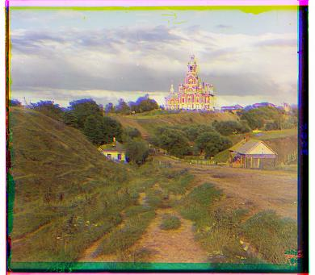

import numpy as np
import skimage as sk
import skimage.io as skio
import scipy
from matplotlib import pyplot as plt
jpgs = ["cathedral.jpg", "monastery.jpg", "tobolsk.jpg"]
tifs = ["church.tif", "emir.tif", "harvesters.tif", "icon.tif", "lady.tif", "melons.tif", "onion_church.tif", "sculpture.tif", "self_portrait.tif", "three_generations.tif", "train.tif"]
The start of the project followed the skeleton provided in the colorized_skel.py file.
def separate_channels(imname):
im = skio.imread(imname)
im = sk.img_as_float(im)
height = np.floor(im.shape[0] / 3.0).astype(int)
b = im[:height]
g = im[height: 2*height]
r = im[2*height: 3*height]
return b, g, r
Crop helper function that find first corner value that is no longer either entirely black or white
# Gives value of corner where it no longer cuts
def crop_val(img):
for i in range(img.shape[1]):
if img[i, i] != 1 and img[i, i] != 0:
return i
I utilize Normalize Cross-Correlation to find alignment
There is commented code for edges that was attempted that creates similar images for the jpgs, but fails to run in a timely manner for tifs
def ncc(img1, img2, edge=False):
#if edge:
#img1 = edges(img1)
#img2 = edges(img2)
img1 = np.ndarray.flatten(img1)
img2 = np.ndarray.flatten(img2)
return np.dot(img1 / np.linalg.norm(img1), img2 / np.linalg.norm(img2))
def align(img1, img2, displace=[-15,16], edge=False):
score_val = 0
shift = [0, 0]
# Returns minimum cut value of images
crop = min([crop_val(img) for img in [img1, img2]])
cropped_img1 = img1[crop: img1.shape[0], crop: img1.shape[1]]
cropped_img2 = img2[crop: img2.shape[0], crop: img2.shape[1]]
for i in range(displace[0], displace[1]):
for j in range(displace[0], displace[1]):
score = ncc(np.roll(cropped_img1, (i, j), (0, 1)), cropped_img2, edge)
if score > score_val:
score_val = score
shift = [i, j]
return np.roll(img1, shift, (0, 1)), np.array(shift)
As exhaustive search is inefficient and too slow for larger sized images, we use an image pyramid to align the larger images
def align_pyramid(img1, img2, edge=False):
if img1.shape[0] < 500:
return align(img1, img2, edge=edge)
res, shift = align_pyramid(sk.transform.rescale(img1, 0.5, anti_aliasing=True), sk.transform.rescale(img2, 0.5, anti_aliasing=True), edge=edge)
shift *= 2
alignment, update = align(np.roll(img1, shift, (0, 1)), img2, [-5, 5], edge=edge)
return alignment, shift + update
Attempt to create canny edge detector image mask to use edges to score images instead of pixel color
def edges(img):
noisy_img = scipy.ndimage.gaussian_filter(img, 4)
noisy_img = sk.util.random_noise(noisy_img, mode='gaussian', mean=0.1)
return sk.feature.canny(noisy_img, sigma=3)
# Works on smaller images but uses significantly more time on the larger images, was not able to see results of tif
Sample Canny Edge Result
We utilize the following code to display the results of the jpg pictures
for jpg in jpgs:
b, g, r = separate_channels("images/" + jpg)
ag, g_shift = align(g, b)
ar, r_shift = align(r, b)
im_out = np.dstack([ar, ag, b])
skio.imshow(im_out)
skio.show()


for tif in tifs:
b, g, r = separate_channels("images/" + tif)
ag, g_shift = align_pyramid(g, b)
ar, r_shift = align_pyramid(r, b)
im_out = np.dstack([ar, ag, b])
skio.imshow(im_out)
skio.show()
plt.imsave("results/" + tif[:len(tif) - 3] + "jpg", im_out)